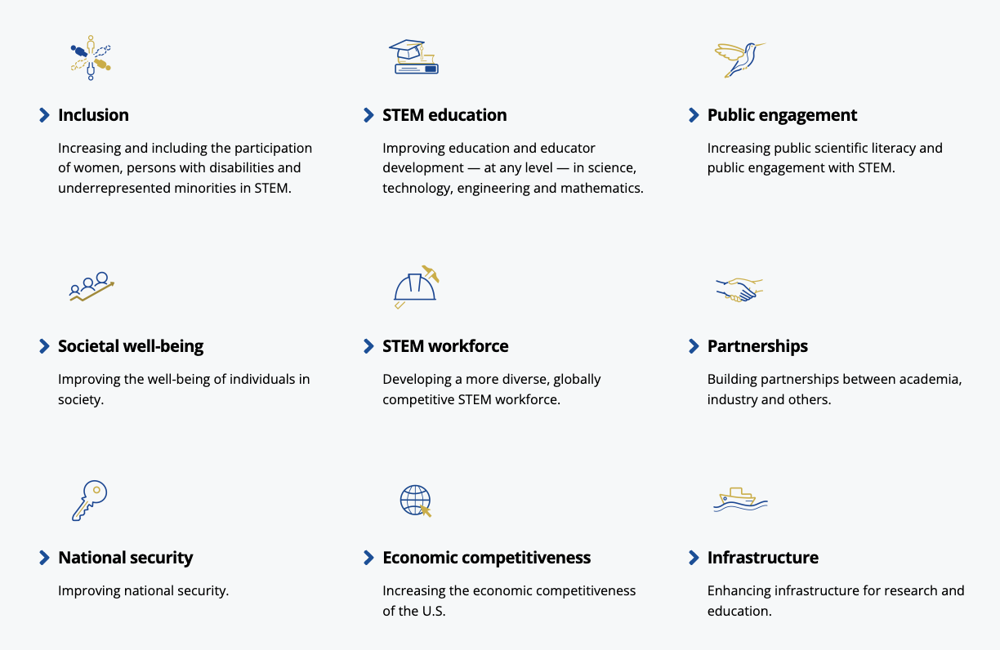
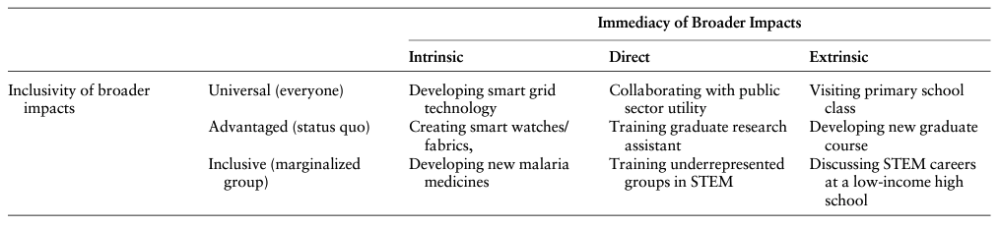
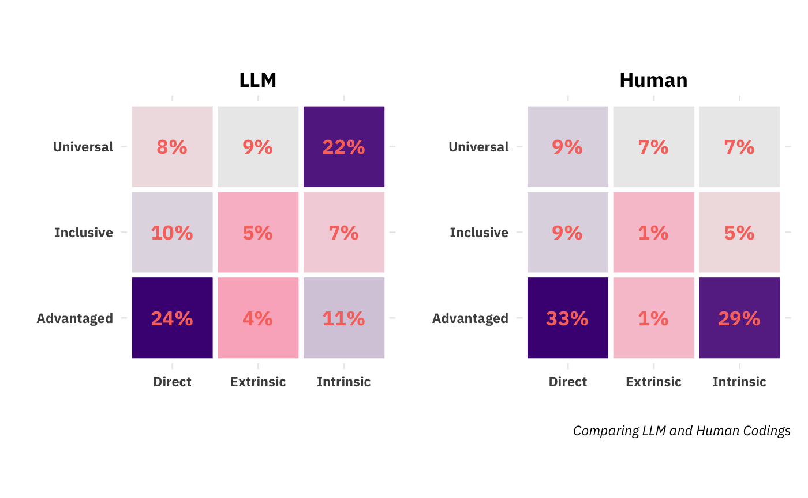
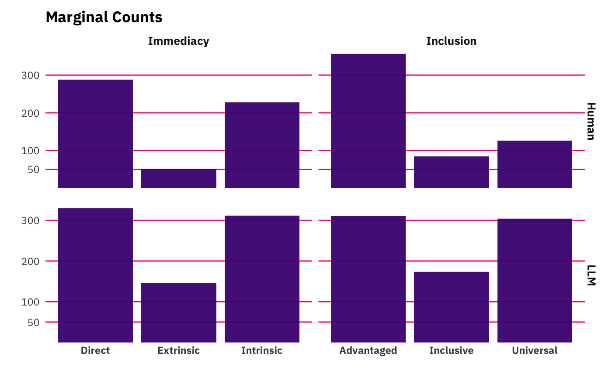
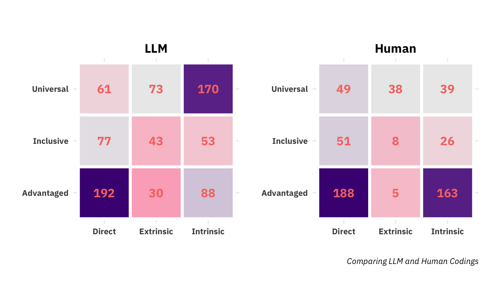
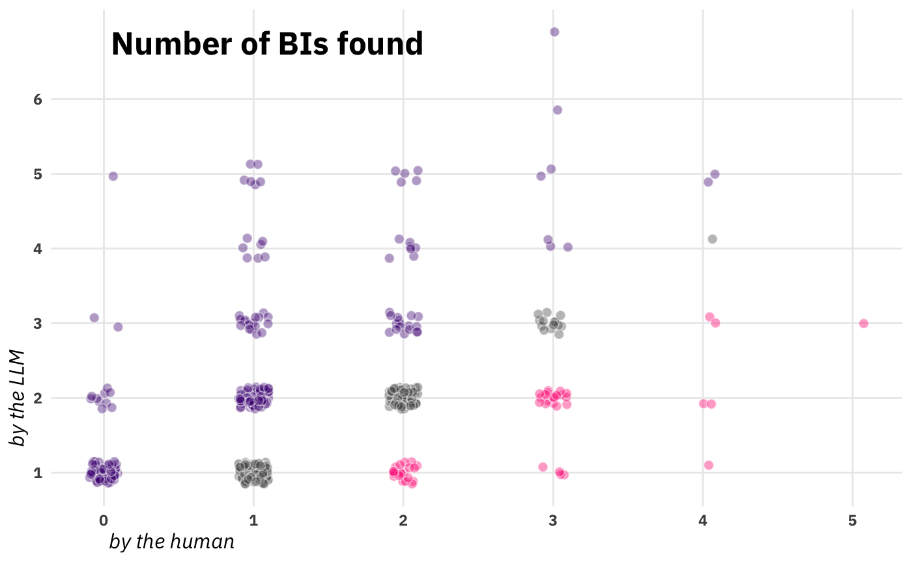
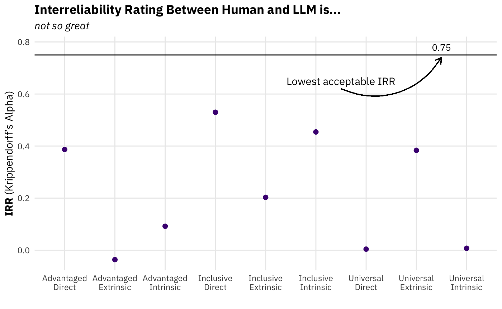
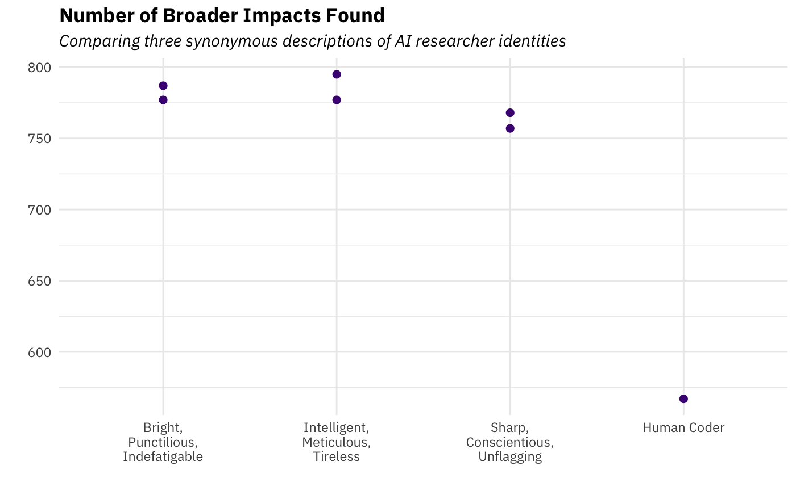
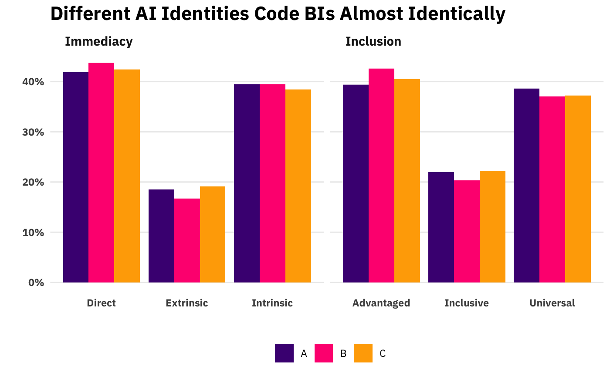

{
"broader_impact_description": "The consensus paper from the meeting aims to produce clear benefits to science and society by establishing best practices for cognitive training studies, which could enhance cognition in elderly individuals and reduce achievement gaps in STEM fields.",
"principal_beneficiaries": "The primary beneficiaries include scientists, regulatory bodies, funding agencies, the general public, elderly individuals, and students in STEM fields. This is inferred from the text.",
"reasoning": "The broader impact is universal as it aims to benefit a wide range of groups including the general public, elderly individuals, and students in STEM fields. The impact is direct because it flows from the research but is not the specific goal of the research.",
"inclusion_code": "universal",
"immediacy_code": "direct"
}Note to readers: I’ve published this in a beta stage so that the fine folks at Sage can read it. The prose is unpolished and the plots aren’t as aesthetic as I’d like. There is at least one mention of a technical document that I’m yet to upload, and two sections end with an unceremonious “forthcoming.” That said, I think it is very readable in its current state. Enjoy!
Introduction
A while back I was brought on as part of a project in which the principal investigator was looking at the broader impacts of NSF grants. I’ll go into a little more detail below, but broader impacts are basically a researcher’s statement of how their research benefits society generally. A prior research assistant had manually coded 400 broader impacts along two dimensions: who are the project’s primary beneficiaries and to what degree is the project’s broader impact connected to its intellectual merit, the core scientific part of the endeavor. By the time I was brought onto the project, the task was to figure out if certain types of broader impact strategies were associated with more or fewer academic publications. Given the complexities of the models I wanted to run (zero-inflated this-and-that, controlling for various institutional factors), the \(N = 400\) sample was pretty meager. There were some marginally significant parameters, but most estimates were very imprecise, meaning we oftentimes couldn’t say whether a given association was positive or negative, much less if it was large or not meaningfully different from zero.
That was three years ago. Since then, using LLMs to label text has started to gain acceptance as an alternative to the slow and costly procedure of having humans do it. This post is my initial foray into seeing if I can go from \(N = 400\) to \(N \rightarrow\infty\), which means first seeing how seeing how an LLM behaves when it codes the same 400 NSF grants already coded by a (human) researcher. Different readers will find different parts of the post useful. That said, I imagine it will be most useful for a social scientist looking to code data herself. Even if the topic of NSF grants and broader impacts per se might not be of interest, the steps I go through below address the issues anyone labelling data will also have to address.
Lastly, this post is implicitly a “Part 1” of an \(n\)-part series on this project.
NSF Grants and Broader Impacts
For the purposes of this mostly technical post, the only thing you need to know about the National Science Foundation (NSF) is something you likely already know: it’s like a science sugar daddy. You, a researcher, have this cool project you want to do. If you can convince the NSF that your project is indeed is as cool as you say it is, you’ll get an award1 to carry out this project. Now maybe for the part you don’t know. Since 1997, the NSF has used two criteria to determine grant funding: intellectual merit and broader impact.2 Respectively, these are “the potential to advance knowledge” and “the potential to benefit society and contribute to the achievement of specific, desired societal outcomes” (here). This NSF site is a bit more direct about what a broader impact proposal should be. “It answers the following question: How does your research benefit society?” (here).3
As with most things, you’ll get a better idea of what broader impacts are all about much quicker via examples. The NSF website gives nice examples of the types of benefits can fall into:

And because I know you’re still curious, here are three specific broader impacts written up by NSF grantees. In 2021 the Durham Technical Community College received a grant to create an inclusive makerspace and implement support services in order to promote gender equity in technical fields and create welcoming learning environments for all students. In that case, the broader impact of the grant took center stage. In another case, a researcher at Northeastern University received a grant to develop a tool to detect code injection vulnerabilities. The researcher described the broader impact thusly, “This project involves undergraduate and graduate students in research. All software and curricula resulting from this project will be freely and publicly available; the resulting tools will be publicly disseminated and are expected to be useful for other testing and security researchers.” And sometimes the broader impact is dispatched with in just a few words, as when a grantee ended his abstract on using Deep Neural Networks to learn error-correcting codes by noting that the project “should lead to both theoretical and practical advances of importance to the communications and computer industry.”
Now that your curiosity about broader impacts is slaked, I’ll move on.
As I mentioned in the opening paragraph, I was brought on as a data guy to analyze associations between different types of broader impact activities and other grant characteristics (e.g., number of publications resulting from the grant, $ize of the award, the award’s directorate, etc.). These types of broader impacts don’t come pre-labeled. They have to be coded using the unstructured text made public by the NSF (big footnote on coding if you’re interested).4 That project used the Inclusion-Immediacy Criterion (IIC) developed by Thomas Woodson rubric to code grants’ broader impacts. Inclusion and immediacy are two independent dimensions along which a grant’s BI can vary. The first dimension refers to who the primary beneficiaries of the grant are. The inclusion dimension’s possible values are {universal, advantaged, inclusive}. These labels characterize grants that, respectively, benefit everyone indiscriminately (as a public good), grants that benefit those currently in positions of power, and then those that primarily benefit marginalized groups. The second dimension, immediacy, refers the degree of interconnectedness between the main activity of the grant and its broader impact. Its three values are {intrinsic, direct, extrinsic}. As described by the NSF, “‘Broader Impacts’ may be accomplished through the research itself [inherent], through activities that are directly related to specific research projects [direct], or through activities that are directly supported by, but are complementary to, the project [extrinsic]” (there will be more explanation and examples in the prompt where I explain these categories to gpt-4o).
In tabular form:

Before going on, it’s important to note that this is a difficult coding task, both in relation to the more common coding situations in which LLMs have been employed and on its own merits. The authors of the 2022 paper wrote that they did an initial round of coding, resulting in a “low” interrater reliability score.5 After discussing discrepancies and coding more data, they achieved a “moderate” degree of reliability, though it’s unclear how much of the ‘unreliability’ resulted from categories extraneous to the IIC (for details, you’ll have to read the paper). This difficulty stems from both the complexity and fuzziness of the concepts in the coding rubric and the vague descriptions given by NSF grantees writing up their projects.6 On the last point, Woodson and Boutillier wrote in a section titled “Lack of Detail,” “At times, the BIs in the PORS were vague and difficult to code. Some researchers included an aspirational statement about the potential impacts of their work without explaining the specific interventions intended to bring about those impacts.” I say this to make readers aware that even humans, which are presumed to be the “gold standard” coders, often are unsure of what the correct coding is and disagree amongst themselves. I’ll come back to this point in the conclusion, but given where the vibes are at in this cottage industry, I think it’s important to say that LLM coding implementations should be judged in relation to the human coding implementations they’re likely to supplant, not perfection.
The Prompt
Below you’ll see the prompt I cobbled together by first describing the nature of the task that the LLM was about to undertake, followed by a description of the Inclusion-Immediacy Criterion with liberal (unattributed) quoting of Thomas Woodson’s own exposition from his his 2022 paper, followed by detailed instructions on what the desired response format. Without further ado, here’s the prompt gpt-4o received:
You are a sharp, conscientious, and unflagging researcher who skilled at evaluating scientific grants across all areas of study. You will be presented with an NSF grant project outcome report. NSF grant project outcome reports contain information on both the intellectual merit of a project (how the project will advance science) and its broader impact (how the project will benefit society). Your task is to find and describe the broader impact, then code it along two dimensions: inclusion and immediacy. Pay close attention to the meanings of words in backticks below.
The first dimension, inclusion, refers to who will primarily receive the benefits of the broader impact. A broader impact is classified as
universalif anyone could at least in theory benefit from it. Public goods such as improving primary school teaching practices or developing a better municipal water filter are examples of universal impacts. A broader impact is classified asadvantagedif the primary benefit will be experienced by advantaged groups and/or maintain status hierarchies. Scientists, as well as wealthy people and institutions count as advantaged. Along the inclusion dimension, a broader impact isinclusiveif its main beneficiaries are marginalized or underrepresented people. Common examples of inclusive broader impacts are programs that help women, people of color, and people with disabilities advance in STEM fields.
The second dimension, immediacy, refers to the centrality of the broader impact to the main part of research project. A broader impact is
intrinsicif the broader impact is inherent to and inseparable from the main principal purpose of the grant. For example, if a project is developing carbon capture and sequestration technology, the research and societal benefits of reducing greenhouse gases overlap and thus the broader impact is intrinsic to the project. Some broader impacts areextrinsic. These broader impacts are separate from the main intellectual merit of the research project, and often the project is only tenuously related to it. For example, if a cell biologist studying proteins creates a presentation for a local high school about STEM careers, the broader impact is extrinsic. The outreach to high school students is a separate endeavor that takes place outside, or is extrinsic to, the research. Along the immediacy dimension, a broader impact is classified asdirectif its impact flows directly from the research but is not the specific goal of the research. Training graduate students is a quintessential direct broader impact. For most research grants, training a graduate student is not the purpose of the research. Rather, researchers train graduate students in order to complete a research project. The training is directly related to the research, but it is not the point or purpose of the research.
Please code the following NSF grant along the two dimensions of inclusion and immediacy. Take a deep breath, reason step by step, and respond in machine-readable json output. Use the following format, writing your responses where the triple backticked json values are (but you should use double quotes since that is correct json formatting):
[{“broader_impact_description”: ```Write a one or two sentence description of broader impact staying as close as possible to the text.```, “principal_beneficiaries”: ```Who are the primary beneficiaries of the broader impact. Are they mentioned explicitly or are you making an inference?```, “reasoning”: ```In a sentence, relate the broader impact to the coding rubric```, “inclusion_code”: ```Choose from {universal, advantaged, inclusive}```, “immediacy_code”: ```Chose from {intrinsic, direct, extrinsic}```}]
Note: if a grant has more than one explicitly mentioned broader impact, reason about each one separately and give each its own json response, separating them with a comma. Do not use any formatting such as newlines, backticks, or escaped characters.7
This message is given to OpenAI’s chat-completion endpoint as a system message, basically giving it the context it needs to appropriate respond to the user messages it’s about to receive. You can think of system messages as “mindset” messages and user messages as inputs. In this case, the user messages are going to be the grants’ project outcome reports.8 When I sent the user message I received an assistant message with output that, ignoring some important details, had the following format:
In a way, that’s it. If you overlook a thousand devils in a thousand details, conceptually it’s pretty simple to have an LLM code text. You create a prompt that explains the procedure and then you give it text en masse.
The most basic question one can ask everything so far is, Will ChatGPT be able to do this? Will it be able to respond sensibly? If the responses are sensible, will they match the human codings? I’ll get to answering those questions in the second section of the results.
Results
I’m going to break down the results into two sections. First, how did gpt-4o with my prompt compare to the human coder? Second, how consistent gpt-4o with itself across variations in the exact prompting I used?
Comparison with Human Coder
In the current transitional era from humans to LLMs, the main comparison of interest still isn’t AIs with themselves, but AIs with humans. That’s what we’ll look at in this section.

First, the similarities. Both found that {direct, advantaged} was the most prevalent joint label and that the three least populated categories were {extrinsic, advantaged}, {extrinsic, inclusive}, and {instrinsic, inclusive}. That agreement is nice. They also both show high discrimination, neither uniformly assigning the same pair of labels to all broader impacts nor deterministically assigning one inclusion code to a given immediacy code, or vice versa. There is, however, a big disagreement about what the second most prevalent class is. The human researcher found almost as many {instrinsic, advantaged} as the consensus majority category, {direct, advantaged}. The LLM’s second-preferred category, however, was {instrinsic, universal}. This indicates a likely disagreement about the inclusion dimension, with the LLM seeing benefits redounding to society at large (universal) where the human sees benefits as accruing to the advantaged. To get more insight, we can look at the univariate (marginal) densities of the two dimensions:

Again, looking at the two subplots in the right column, we see that for the human, advantaged is far and away the dominant label whereas for the LLM it’s just a hair over universal. If this post were a formal attempt to develop an LLM-based coding of all NSF grants, this is sufficient cause to hit the pause button and iterate over codebook developement and prompt engineering until we reached higher levels of agreement. But there’s actually more a fundamental disagreement coming up. You might have noticed that if you were to stack all the LLM’s bars atop each other in the graph above, they’d be taller than the human coders. We can also look at the heatmaps again, but with raw counts instead of percentages:

The eagle-eyed observer will notice that, in every single cell, the LLM has more broader impacts than the human coder. That’s not a data error. It’s something much weighter. Here’s a grant-level scatterplot that’s going to blow open this whole enerprise:

The way I’d read this is to go column by column, noting the distribution of number BIs found by the LLM while holding constant the number of BIs found by the human. So, for example, when the human found 0, the modal number found by the LLM was 1. When the human found 1, the modal number found by the LLM was also 1, but the LLM found more than 1 in the majority of grants. Moving further rightward, the grey dots along the diagnonal represent agreement about number of BIs present in a POR, while purple dots are cases where the LLM found more, and pink dots are cases where the human found more.
I’d argue that this issue, the radical and prevalent disagreement about the number of BIs present in a text, is at least as fundamental as disagreement as to the labeling of BIs along relevant dimensions. Coincidentally, in a project of my own where I’m coding immigration laws, this exact same issue cropped up but with only human RAs. Large laws, especially annual or biennial budgets, potentially contain many provisions that affect immigrants. Sometimes it’s clear where one legislative goal ends and another begins. Almost as frequently, however, two equally reasonable and motivated researchers could disagree about whether two sections are serving the same goal and thus should be counted together, or whether the sections of the bill are indepdent policies. I bring this different project up to point out that the issue of ‘relevant entity’ discretization might be a uniquely difficult task generally.
At this point the question of interrater reliability is moot. I’m going to go ahead and calculate it, but the more interesting remainder of this post lies in comparing the LLM output with itself, which I’ll get to shortly.
So, there are a different ways to think about IRR in this application. I’ll go with the way the Woodson and Boutillier calcuated it in their paper where each grant is hanging out in nine-dimensional space, occupying either a 0 or a 1 on each. That is, each grant is dummy coded along nine dimensions where each dimension is a combination like, {advantaged-intrinsic}, {inclusive-extrinsic}, or {universal-direct}. This means transforming the data into the following format for all nine joint codings:
[,1] [,2] [,3] [,4] [,5] [,6] [,7] [,8] [,9] [,10] [,11] [,12]
llm_detect 1 0 0 1 1 0 0 1 0 0 1 0
ra_detect 1 1 0 0 1 1 0 1 0 0 1 0Even without know what the specific formula is for calculating IRR, your prior should be that the IRR shouldn’t be very high since the LLM detected so many more BIs than the human. Well, get ready to update downward, because it’s even worse than that:

As you can see, none of the nine are in the neighborhood of an adequate \(\alpha\). Two of the IRR values are almost precisely zero, and one is slightly negative. If this were to happen to you as you were trying to get an LLM to code some text for an important project, it would definitely be a moment to close your laptop and taste test a few Belgian quadrupels before trying to rectify the situation.
My suspicion that a large proprotion of this IRR disappointment comes from the 80 broader impacts found by the LLM when the human found none (and to a lesser extent all the other purple points above the diagonal). In this project’s next phase, diagnosing the source of this disagreement will be the top priority. After reaching a provisional agreement about what caused the low reliability between the human and the LLM, the next step will be to modify the prompt. Though exactly how the prompt will need to be modified will depend on the diagnosis, one thing is certain. The prompt will have to mention the possibility that there is no broader impact. It will also likely have something to the effect of, “A project outcome report should usually one or two broader impacts. At most, it can have four. If you believe you have found more, please consolidate them into each other until there are three or four.”
Opening Statement Experiment
In addition to comparing the performance of the LLM against the human coder, we can also compare it against itself. Until now, I’ve kept mum about a few details of the experiment. For each grant, I didn’t only prompt GPT once, I prompted it three times, each time changing the first sentence. Here are the three openings, the first of which you read above.
- “You are a sharp, conscientious, and unflagging researcher who skilled at evaluating scientific grants across all areas of study.”
- “You are an intelligent, meticulous, and tireless researcher with expertise in reviewing scientific grants across various fields.”
- “You are a bright, punctilious, and indefatigable researcher who is an expert at reading scientific grants across all disciplines.”
Now, if you’re not familiar with prompting lore, you’re probably wondering, Why would he do that?9 This was motivated by previous findings that seemingly insignificant changes to prompts can produce surprisingly different outputs.
First, let’s see if the different openings led to different numbers of grants found:

I’m going to say no, not really. And also, no – you’re not seeing double. For each opening there are two dots. You’ll have to read to the end to find out why I have two estimates for each LLM identity. For now, don’t sweat it, really.
We can also see if different first sentences led to different label distributions:

I’ve chosen to go with the barplot of marginal distributions instead of the heatmaps of joint distributions, but the takeaway would be the same either way: the three openings led to the same distributions in both variables.10
If I were doing this over, I’d probably choose less synonymous opening sentences. Though it’s important that each of the three roles is associated with competence in the task at hand, I really stacked the deck against myself by making these openings so similar. For example, instead of the LLM’s identity always being that of a researcher, the LLM could have also been a journalist or a well-informed reader of popular science. Or, instead of being a generic researcher, the LLM might have been a sociologist, a historian, or even a political scientist. Hindsight is 20/20. But, who knows! Maybe one of synonymous descriptors I used sets gpt-4o down a different path from the other synonyms.
Order Experiment
Simultaneously with the AI identity experiment described above, I carried out an experiment wherein I shuffled around the order in which the three values of the two dimensions were described in the prompt. For example, in the prompt as presented above, the order of the inclusion values was universal, then advantaged, and finally inclusive. But that order only happened around 1/6 of the time. The other approximately 5/6 of the time, the ordering was one of the other five permutations of those three values.11 While this randomization of inclusion’s values was happening, the exact same thing was happening with immediacy’s three values. This results in a bunch of conditions, 12 but I was most interested in seeing if there were analogous effects to the primacy and recency effects observed in humans, which means just looking at the likelihood of a grant being assigned a label if that label was mentioned first, second, or third within its category. The fact that there’s a ton of other randomization whirring about actually makes these results more robust, pace the misguided notion that it’s better to only randomize one factor at a time.
Before peeking at the results, you should ask yourself if you think order will matter. Some relevant information to inform your priors: the mechanism behind the order effects observed in humans almost certainly isn’t relevant here. Moreover, I’m not sure even humans would experience either primacy or recency effects when the bits being ordered are a) this small and b) only three in number. But what about order effects in LLMs? In a different context (one where the text provided to an LLM was extremely long), AI reseachers have found order effects. Specifically, they found the canonical order effect of primacy and recency bias as they’re observed in humans. But again, these texts are extremely small, making the current situation substantively different from that one. In any case, it was trivial to program this randomization, so I went for it.

As I mentioned, you can think of these points as conditional probabilities. If we look at the first group of three points (the pink ones under Advantaged), from left to right they are the probability of a broader impact’s inclusion dimension being classified as advantaged if advantaged is mentioned first, then second, then third. It’s the same logic for the other five sets of three points. Each reader should draw their own conclusions, but my tentative takeaway is that the differences across order aren’t large enough to justify worry that order matters.13 I suppose there’s a (second-order) worry that we’re even (first-order) worried about this. We wouldn’t be worried that, for example, human coders would be vulnerable to these small differences in order. Since it’s always going to be an empirical question if a particular LLM is subject to order effects in a particular application, I hope that the eventual best practice when using LLMs to code text will be to come up with small prompt perturbations and then show that they indeed don’t matter. Conceptually, it’s the exact same robustness check that’s best practice in regression modeling where you run various defensible models of a phenomenon and declare yout results robust to the extent that they replicate across models. Unfortunately, since I’m not seeing this done, it seems like we’re heading down a path where researchers use a single prompt that has been shown to be acceptable enough against some criteria. But it’s pretty clear that using only one prompt will lead to underestimates of uncertainty, both in the technical sense of undercoverage of standard errors and in the “wake up you in cold sweat” sense of everything hinging on seemingly irrelevant prompt choices.
IRR
Just as I calculated the interrater reliability between one run of the LLM and the human RA, I can also calculated the IRR between different versions of the LLM. Because I sent each grant to be coded various times, I can do a couple different versions of this. The main question I can answer is if the different openings led to different codings. We saw that the different openings led to similar distributions of codings, but that’s a different question from whether or not they coded similarly at the POR level. And remember, the difference between the LLM’s and the human’s codings didn’t seem so large when looking at the distributions, but oh boy were they big when we calculated IRR.
I should at this point mention there’s actually a third and final moving part of this experiment I’ve yet to apprise you of, dear reader. In addition to the two ‘experiments’ above, I took advantage of a feature of OpenAI’s chat-completions API that people seem to be sleeping on. For any prompt you send to this endpoint, you can request n responses (“choices”). If I understand the sparse documentation correctly, these are independent draws from the models response space given a certain prompt. To be clear, these messages (choices) are not sequential messages. Rather, they’re n different forking paths the LLM could have gone down given a certain prompt.14 This lets researchers get a sense of uncertainty of a response.15 We can then compare the resulting IRR when the LLM was given the same prompt with the IRR when the prompt is slighly modified (e.g., when the prompt began with a different opening sentence). In this particular case, we’ll have six (!) IRR estimates: 3 “within” IRRs for each opening and then three “between” IRRs from the pairwise comparisons (A and B, A and C, B and C). Excited? Well, …
Results Forthcoming
Conclusion
Forthcoming16
Appendix
Technical Documentation
Forthcoming
Abstract v. Project Outcome Report
((This is more relevant to an earlier version of this post, but I’m keeping it here for future reference.))
In the interest of completeness, here’s a side-by-side comparison of an award’s abstract and project outcome report.
Abstract
This grant funds the National Research Experiences for Undergraduates Program (NREUP), administered by the Mathematical Association of America (MAA), headquartered in Washington, D.C., and held at various locations throughout the United States. The program is designed to provide undergraduates from underrepresented groups majoring in mathematics or a closely related field with challenging research opportunities and will offer these experiences during the summers of 2014, 2015 and 2016. The length of the experiences can vary from location to location but will be a minimum of six weeks. The program will reach minority students at a critical point in their career, midway through their undergraduate program through an undergraduate faculty member with whom they have a strong connection.
NREUP will continue its track record of increasing minority students’ interest in obtaining advanced degrees in mathematics. NREUP will invite mathematical sciences faculty to host MAA Student Research Programs on their own campuses. The MAA will select the best from competing proposals. NREUP provides key components to encourage students to pursue graduate studies and careers in mathematics: enriching and rewarding mathematical experiences, mentoring by active researchers, and intellectual networking with peers. It also provides an annual full day program to assist the new REU director with management details of the program and the potential REU director with further refinement of his/her concept and proposal writing skills. It also assists attendees in expanding their knowledge of federal and non-federal funding sources and increasing their knowledge of and skills in student mentoring. Moreover, by supporting faculty at a diverse group of institutions to direct summer research experiences, this project supports not only undergraduate students but also the development of a community of skilled faculty mentors who are expected to provide ever-increasing opportunities for undergraduate research. This project is jointly supported by the Workforce and Infrastructure programs within the Division of Mathematical Sciences
POR
National Research Experience for Undergraduates Program (NREUP) of the Mathematical Association of America (MAA) provided challenging research experiences to undergraduates to increase their interest in obtaining advanced degrees in mathematics during the summers of 2014, 2015 and 2016. The students were from underrepresented minority groups and were majoring in mathematics or a closely related field. NREUP served a total of 130 undergraduates. Of these student participants 46.92% (61) were female, 53.08% (69) were African American, 38.46% (50) were Hispanic or Latino and 2.31% (3) were Native Americans. This project also received supplemental funding from the National Security Agency in 2015.
NREUP sites were located in states across the nation, including Arkansas, California, the District of Columbia, Indiana, Michigan, North Carolina, New Jersey, New York, Pennsylvania, Puerto Rico, Texas and Virginia. A typical NREUP site consisted of one or two faculty members and four to six students who worked together on a research project for a minimum of six weeks. Funding was provided for faculty and student stipends, transportation, room and board, and supplies. Research areas included financial mathematics, graph theory, game theory, mathematical economics, mathematical modeling, and partial differential equations. Some research was of a theoretical nature and some was done in the context of a real-world problem such as disease modeling, forensic science and hurricane evacuation.
Each student prepared a PowerPoint presentation or a written paper for submission to a undergraduate research journal. All gave on-campus presentations on their research at the end of the summer, and many presented posters and papers at regional and national mathematics conferences. Some continued working on their research during the following academic year.
Project evaluation focused on student attitudes and pursuit of graduate degrees. Data confirmed that many students gained confidence in their ability to do mathematical research and succeed at the graduate level.
Footnotes
Though these generically grant NSF seems ↩︎
So, for example, if pull down NSF grant abstracts from the archive, they end with the line, This award reflects NSF’s statutory mission and has been deemed worthy of support through evaluation using the Foundation’s intellectual merit and broader impacts review criteria.↩︎
There is of course a lot of interesting history and politics behind this. If you’re a person given to kvetching about wokeness, it probably doesn’t help that, as of current writing, the first example of a potential broader impact is “Inclusion: Increasing and including the participation of women, persons with disabilities and underrepresented minorities in STEM.” I would point out two things. First, in 1994 Republicans took the House for the first time in https://en.wikipedia.org/wiki/Republican_Revolution Importantly, these weren’t your granpappy’s Rockefeller Republicans. These were pugilistic, radio talk-show style Republicans. Everything was about to become nastier, and science wouldn’t come out unscathed. [Guy who talks about waste, makes book.] So, from a public choice perspective, you can think of forcing researchers to include societal benefits in their projects as a defensive move to prevent funding cuts to the NSF. Second, the rest of this article is going to be a dry-as-dust description of using LLMs to code text. If you somehow got here to learn about politics, I promise I won’t be offended if you stop reading now.↩︎
For those blissfully unaware, “coding text” refers to the process of applying labels (or “annotations”) to text. Texts can be (all or part of) a news article, a speech, a TV commercial, a tweet, an interaction between Joe Rogan and his interviewee, etc. The labels thereto applied depend on the theoretical interest of the researcher. S/he might be interested in emotions (usually pretentiously referred to as either affect or sentiment) in which case the label applied could either come from the set {positive, negative}, or could come from a more expansive set like {joy, trust, fear, surprise, sadness, disgust, anger, anticipation}. Or perhaps the labels detect the presence of something, like “Is this about politics?” or “Is this hate speech?” These labels can then be used either descriptively in order to summarize large corpora, and/or they can also be used in regression modeling. They’re friendly and familiar to quantitative scientists, who not only spend most of their time working with quantitative information, but probably also consider it superior to qualitative information. The issue, though, is that turning unstructured text into nice quantitative features is a time-consuming, mentally-draining, and downright hellish if you do it for long enough.↩︎
Interrater reliability is the ubiquitous measure of how similar a pair of raters is. Its ubiquitous operationalization is Krippendorff’s \(\alpha\). Very relevant to what we’re going to do below, when one of the raters is presumed to be a ‘gold standard’ (usually a domain expert), Krippendorff’s \(\alpha\) serves as a ‘goodness of fit measure’ for the prospective labeller.↩︎
Interestingly, when I gave my description of the IIC to ChatGPT for comment, one of the “challenges and considerations” it mentioned was, “Subjectivity in Assessment: While the IIC aims to provide a clear framework, the evaluation of inclusion and immediacy can still be somewhat subjective, depending on the reviewers’ perspectives and expertise.”↩︎
Just in case your curious, the prompt has around 800 tokens. Current rates are $0.005 per 1k tokens of input and $0.015 per 1k tokens of output.↩︎
You can think of an NSF grant’s project outcome report (POR) as a description of what the researcher(s) did grant funding from the NSF. If an NSF abstract is the prospective project description, the POR is the retrospective project description.↩︎
If you’re wondering why I’m giving the AI an identity at all, I’m going to do the laziest thing ever and refer you to chapter three of this book.↩︎
You can glean this from the almost identical height of each dugtrio of bars.↩︎
You can find the code I used to randomize and patch together prompt in the technical document linked to at the end of this post.↩︎
\(6 \times 6 = 36\) conditions↩︎
Well, normatively, each reader should complain, “How they hell am I supposed ‘draw my own conclusions’ when you haven’t given us the uncertainty around these estimates? This author is beyond statistically incompentent.” First, ouch. Second, there are some days when you just can’t be bothered to code up either a label permuter or bootsrap to get uncertainty estimates. Today is one of those days.↩︎
When I first found out about the choices feature, I was elated. I wrote (in a previous draft of this post), “It is difficult to overstate how useful this feature is. It’s so efficient. You may have noticed that my prompt is pretty large, and I have to send it to OpenAI’s servers each time I want something coded. The tokens I’m spending sending that thing are about 10 times more than the tokens I’m spending on GPT’s response.” But then I went back and looked at files I got back from OpenAI and it looks like it actually sends the prompt twice, or at least I was charged as if I had sent the prompt twice. So much for that excitement.↩︎
It’s a very local/restricted sense of uncertainty, however. There’s also the aforementioned prompt-based uncertainty. There’s also the uncertainty stemming from the fact that different versions of a given LLM, e.g.
gpt-4o-05-13versus some future version ofgpt-4o, will give different answers. Then we havegpt-4oversusgpt-4versusgpt-3.5-turbo. And then we have OpenAI versus Claude versus Gemini. At a fundamental level, we also have the fact that, in our particular timeline, even OpenAI’s, Claude’s and Gemini’s responses are correlated when compared to the responses of LLMs created in alternate timelines.↩︎Maybe, conclusions are overrated. You can draw your own conclusions!↩︎